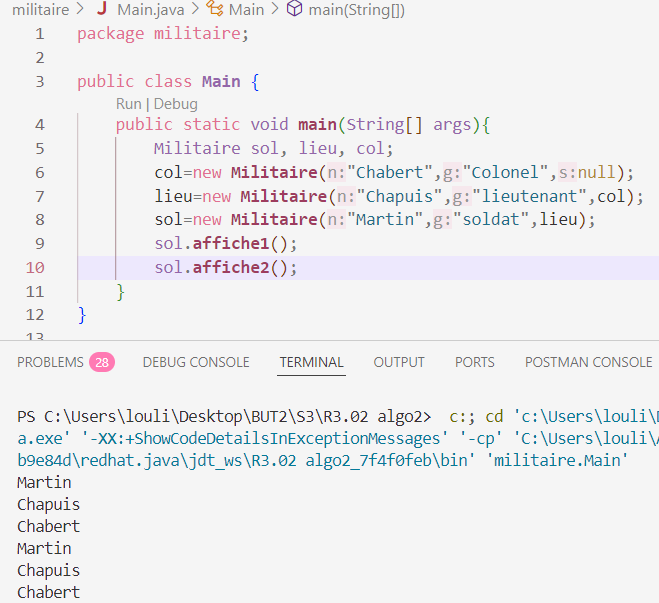

Aperçu du projet

Description du projet
Implémentation en Java du célèbre chiffrement de César, une des techniques de cryptographie les plus anciennes. L'application permet de chiffrer et déchiffrer des messages en utilisant un décalage dans l'alphabet, avec une interface graphique simple et efficace.
Ce projet m'a permis de découvrir les bases de la cryptographie classique et de mettre en pratique les algorithmes de manipulation de chaînes de caractères en Java.
Technologies utilisées
Fonctionnalités développées
- Chiffrement de texte avec clé de décalage personnalisable
- Déchiffrement avec clé connue
- Analyse de fréquence pour casser le code
- Interface graphique intuitive
- Gestion des caractères spéciaux et espaces
- Sauvegarde et chargement de messages
- Mode brute force pour trouver la clé
Défis techniques rencontrés
- Algorithme : Implémentation correcte du décalage circulaire
- Caractères : Gestion des majuscules, minuscules et caractères spéciaux
- Analyse : Implémentation de l'analyse de fréquence
- Interface : Design clair pour les opérations de cryptographie
- Validation : Vérification des entrées utilisateur
Compétences développées
Algorithmes
Manipulation de chaînes, modulo, boucles
Cryptographie
Chiffrement classique, analyse de fréquence
Interface graphique
Swing, gestion des événements
Logique
Résolution de problèmes mathématiques
Apprentissages historiques
Ce projet m'a également permis d'en apprendre davantage sur l'histoire de la cryptographie, depuis Jules César jusqu'aux méthodes modernes, en passant par l'évolution des techniques de chiffrement et de cryptanalyse.